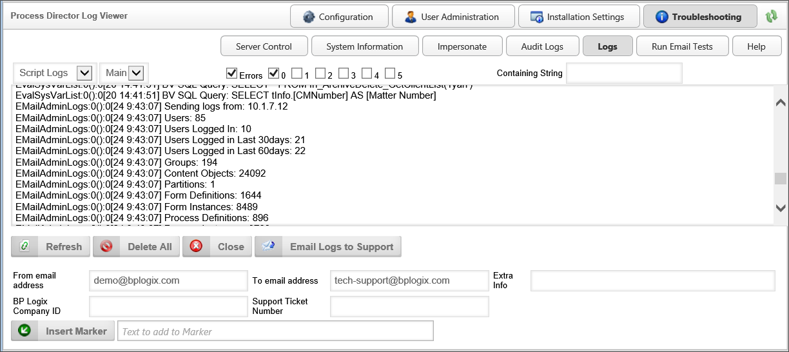
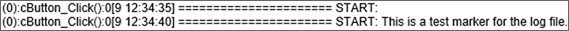

|
|
Lesson Contents | In this Lesson, you will learn the basics of reading and sending log files. |
For Cloud installations, or On-Premise installations that use the Compliance Option, Process Director provides a number of logging functions, all of which are available through the IT Administration section, in the Troubleshooting section. Once you've navigated to the troubleshooting section, you can open the log reader by clicking the Logs button located in the upper right portion of the screen.

Process Director makes the following logs available:
|
LOG FILE |
DESCRIPTION |
|---|---|
|
Script Logs |
Records information from scripts when using the bp.logs methods. |
|
Internal logs |
Records internal system status information. |
|
Init Logs |
Records when various components of functions are initiated. |
|
Audit Logs |
Records changes made to data or processes. |
|
Email Logs |
Records data about email messages sent from Process Director. (For users of the Compliance edition only.) |
You can switch between each of these logs by using the dropdown control located above the Log Viewer, at the far left of the screen. To the immediate right of the log type dropdown is a log file dropdown that gives you access to the current log ("Main") and the four most recent backups. Process Director sets a default log file size of 2MB, so that, when the main log reaches 2MB, it is saved as backup 1, and a new empty Main log is started. Process Director saves the old backup 1 log as backup 2, and so on as the changes ripple down through the log backup numbers.
To the right of the log file dropdown, you will see check boxes that you can use to select if you wish to see logged errors only, and which logging level you'd like to see. Logging is documented at six different levels, Level 0 through Level 5. Level 0 is the default level for logging. Each logging level creates logs at an increasingly detailed scale, with Level 5 being the most detailed level, and level 0 being the least detailed. Nearly all debugging you'll need to do on a regular basis can be done using Level 0 or Level 1 logging. On occasion, system problems may require more detailed logging, but you should be aware that higher levels of logging detail can impact system performance. Using higher levels of logging is usually done in conjunction with assistance from BP Logix, and is not usually necessary otherwise.
Additionally, for users of the Compliance Edition, Some audit logging is also sent to the Windows Event Log. From the Windows Event Log Viewer, you can configure automated actions, such as email notifications, to occur when certain events are logged. For information on this functionality, and how to edit the events sent to the Windows Event log, please see the Audit Logging Variables section of the Developer's Guide.
Some standard events will show up in the log files, based on actions taken by either Process Director users, or by Process Director as processes move through their life cycle. The table below enumerates and describes these standard log events.
|
LOG EVENT |
APPEARS IN A LOG WHEN |
|---|---|
|
NotSet |
Not categorized into the following |
|
Login |
A user logs in |
|
Logoff |
A user logs off |
|
AuthenticateFailed |
A user types the wrong password when attempting to log in, or to access to admin page without privileges |
|
DeleteObject |
A Content List object of is deleted or an object is deleted from an object instance. |
|
CreateObject |
A Content List object of is created or an object is created from an object instance. |
|
UpdateObject |
A Content List object of is updated or an object is updated from an object instance. |
|
MoveObject |
A Content List object of is moved or an object from an object instance is moved. |
|
PasswordChange |
A user changes the password. |
|
CreateUser |
A user is created (User Admin). |
|
DeleteUser |
A user is deleted (User Admin). |
|
CreateGroup |
A group is created (Group Admin). |
|
DeleteGroup |
A group is deleted (Group Admin). |
|
WebService |
A web service is run (Process Director access to Web Service). |
|
TaskCompleted |
A workflow task is completed by a user. |
|
TaskReassigned |
A user is reassigned to a workflow task. |
|
TaskRemoved |
A running task is removed from a running workflow. |
|
Signature |
A user enters data into an eSign signature control on a Form. |
|
RollbackActivity |
A timeline activity is rolled back. |
|
CancelActivity |
A timeline activity is cancelled. |
|
RestartActivity |
A timeline activity is restarted. |
|
RestartTimeline |
A timeline instance is restarted. |
|
SyncStart |
Sync is run/started. |
|
SyncEnd |
Sync is finished. |
|
JumpToStep |
A task is moved to non-connected task with a Jump to Step Custom Task. |
|
CancelStep |
A workflow step is cancelled, e.g. an administrator right clicking on a step and clicking "Cancel". |
|
StopWorkflow |
A workflow instance is stopped. |
|
RestartWorkflow |
A workflow instance is restarted. |
|
UpdateUser |
A user profile is updated (User Admin). |
|
AddUserToGgroup |
A user is added into a group. |
|
RemoveUserFromGroup |
A user is removed from a group. |
|
RemoveObjectFromParent |
Any content object is removed from a parent, e.g. removing an attachment from a workflow. |
|
DownloadDocument |
A user downloads documents from application. |
|
ViewFormData |
When someone accesses form data other than through the normal viewing of a form instance (e.g. through SDK calls). |
|
PermissionAdded |
A permission is added to a user (User Admin). |
|
PermissionRemoved |
A permission is removed from a user (User Admin). |
|
PermissionUpdate |
A user edits and updates an existing permission record. |
|
PermissionReplicated |
This occurs when the user clicks on the "Replicate Permissions to Child Objects" button. |
|
PermissionGiven |
An application elevates a user's permissions. |
|
PermissionDeniedView |
A user attempts to view object to which the user does not have permission. |
|
PermissionDeniedDelete |
A user attempts to delete object to which the user does not have permissions. |
|
PermissionDeniedAdmin |
A user attempts to view admin pages to which the user does not have permissions. |
|
ImpersonateOn |
When impersonate is on (Someone uses impersonate function). |
|
ImpersonateOff |
When impersonate is off. |
|
DelegateOn |
A user sets delegation to other users. |
|
DelegateOff |
A user ends delegation. |
|
UserDisabled |
A user is disabled (User Admin/ Setting). |
|
UserEnabled |
A disabled user is enabled. |
|
AdminReplaceUser |
An administrator uses the "replace user" function. |
|
AdminPageAccess |
A user directly accesses an admin page from the installation server. |
|
ImportObjects |
When an xml file is imported. |
|
ExportObjects |
When an xml file is exported. |
|
FormDataChange |
When a Form is filled out by a user. This is used when form field auditing is active on a form instance. The log entry shows the changes to all the form fields, including the old values, the new values, and who changed the Form. |
|
ViewForm |
Any time a user opens a form instance. The flag fAuditFormViews must be enabled, i.e., set to "True" in the vars file, for this to appear. This may add strongly to the servers load when in use. |
At the top of the Log Viewer, to the right of the logging levels check boxes, you will see a text box labeled Containing String. If you enter text into this text box, then hit the [ENTER] key, Process Director will search the current log for log entries that match the text you have typed into the text box.
On occasion, you may run into issues that you requires assistance from BP Logix to debug. In those cases, a technical support representative may ask you to attach your log files to your technical support ticket. In this case, there is a button located below the log reader that is labeled Email Logs. Below this button, you will see text boxes into which you can enter email addresses to which to send the logs from your Process Director installation. In addition, there is a text box for you to enter other information you'd like to appear in the text of your email. If these are filled out correctly, you can click the Email Logs button to send the logs in a zipped file.
Enter your email address, and send the logs to yourself. When you receive the email, download the zipped log files to your computer, then attach the zipped log files to your support ticket.
If you have an active support ticket, you can automatically attach the logs to your tech Support ticket by entering your BP Logix Company ID and the Support Ticket number into the fields provided, then clicking the Email Logs to Support button
At the bottom of the Log Viewer, you will see an Insert Marker button. Clicking this button will insert a marker into the log file. You can fill in the text box next to the "Insert marker" button to include some custom text in the marker.
You may find it useful to insert a marker when dealing with logs that contain a lot of information, and which are updated frequently by Process Director. For instance, when testing a function, you might insert a marker with custom text before running the test. The marker makes it easier to return to the log and find where your test started.

The example above demonstrates two markers. The first marker is the default marker that is inserted in the log file when you click the Insert marker button. The second example is a marker where the following custom text has been inserted:
This is a test marker for the log file.
In addition to storage in the file system, users of the Compliance edition—which includes cloud-based installations—can have audit logs written into the Process Director internal database for easier access to the logs to view, search, and export audit logs. This functionality is available from within the Troubleshooting section of the administrative console from the Audit Logs button.

The top portion of the Audit Logs screen provides search fields to find the relevant portions of the log files stored in the database. Below the search fields is a link to export the search data to a CSV file. Exporting the data to CSV format enables users to open the exported data in Excel for further analysis, providing a much easier way to analyze audit logs than the text-based log files. The bottom portion of the screen displays the returned records from the database. Each returned row has an expansion icon ( ) that users can click to expand the row to show log file details for that entry.
) that users can click to expand the row to show log file details for that entry.
If you allow outside users who do not have Process Director user accounts, such as customers or suppliers, to have access to your processes via anonymous access, you can enable audit logging for anonymous users as well. To turn this feature on, you will need to set the fAuditAnonAccesses variable to "true" in the Custom Variables file.